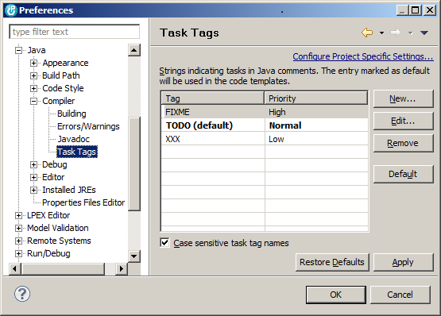
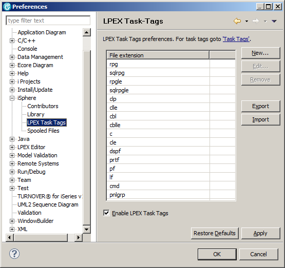

| Notice: The 'Case sensitive task tag names' checkbox is ignored for LPEX task tags. |
This page is also available from the LPEX Task-Tags Preferences page.

Task tags are enabled for the file extensions shown in the table or can be disabled at all.